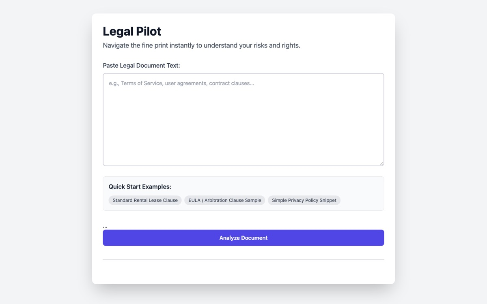
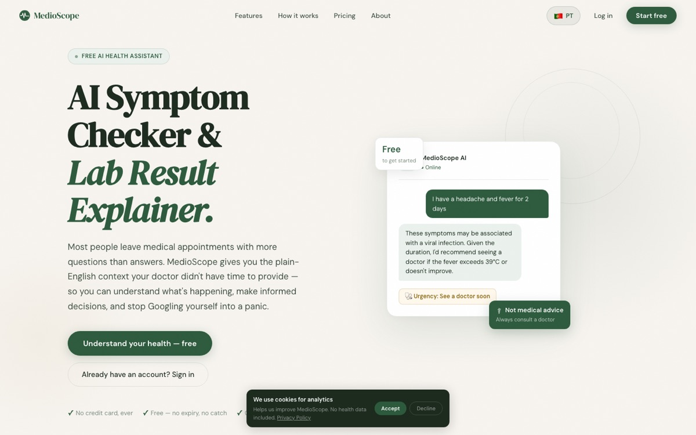
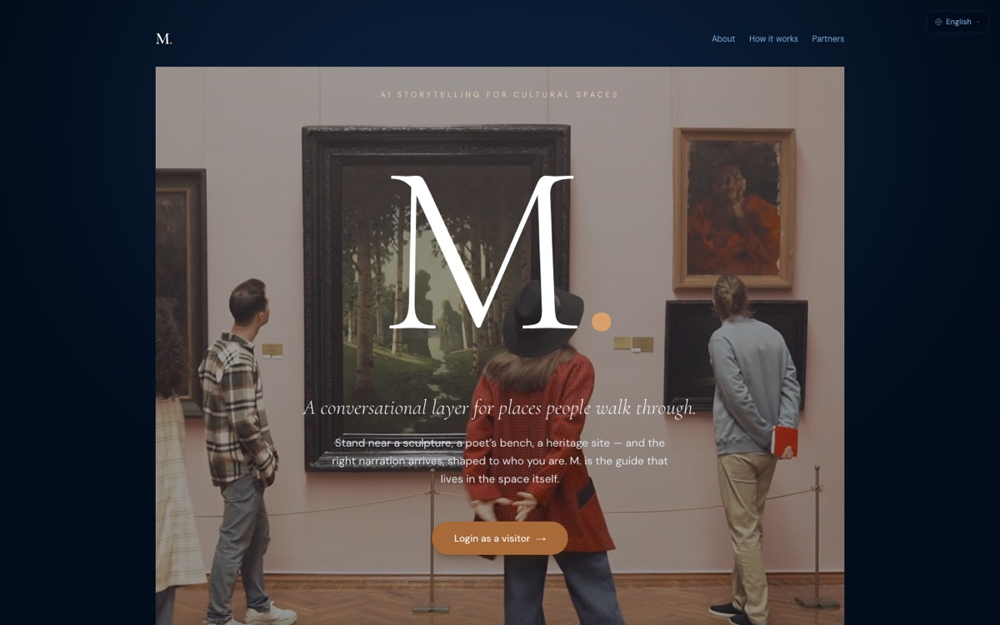
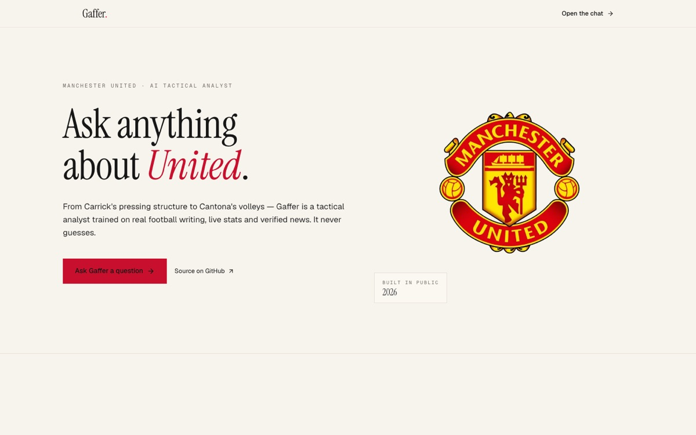

Paste any contract. Get an instant structured breakdown of every risk, obligation, and clause in plain language. No lawyer needed. Built to democratise legal understanding for everyone.

A case workspace for personal-injury attorneys. It turns messy medical-record Excel exports into a usable chronology, lets you layer in client context and verified evidence, pressure-test the defense’s strongest attacks, and build jury-ready materials only from approved, grounded content.
Your AI health companion. Describe your symptoms in plain language. Scan drug packaging to understand what you're taking. Upload lab results for instant clarity. Find the nearest hospital — all in one place.

AI that knows where you are in a museum and starts talking. No app download, no menus — walk into a gallery and it begins. Proximity-triggered narration for cultural spaces: museums, heritage sites, botanical gardens. The guide that lives in the space itself.

Real-time social media anomaly detection for a simulated network. It runs a three-layer stack: rule thresholds per event, NetworkX plus Louvain community detection on a 60-second cadence, and Isolation Forest plus Z-score anomaly scoring on a 5-minute cadence. Redis-backed queues, live WebSocket alerts, and an investigation flow keep the whole pipeline moving.
Router-first RAG agent for grounded tactical analysis of Manchester United. It combines hybrid retrieval with pgvector and BM25 via RRF, live match stats, news ingestion, and web search, then forces cite-or-refuse answers. The retrieval stack uses Voyage embeddings, Cohere rerank, Langfuse observability, Redis semantic caching, and Prefect ingestion flows.

Private couples app built entirely from scratch. Real-time chat with typing indicators, read receipts, and emoji reactions — no third-party chat library. Daily question engine, sequential activity flows, streak system, and push notifications triggered by partner activity. 1,000+ original prompts across 8 activity types. Couple pairing with PIN security and persistent identity across devices.